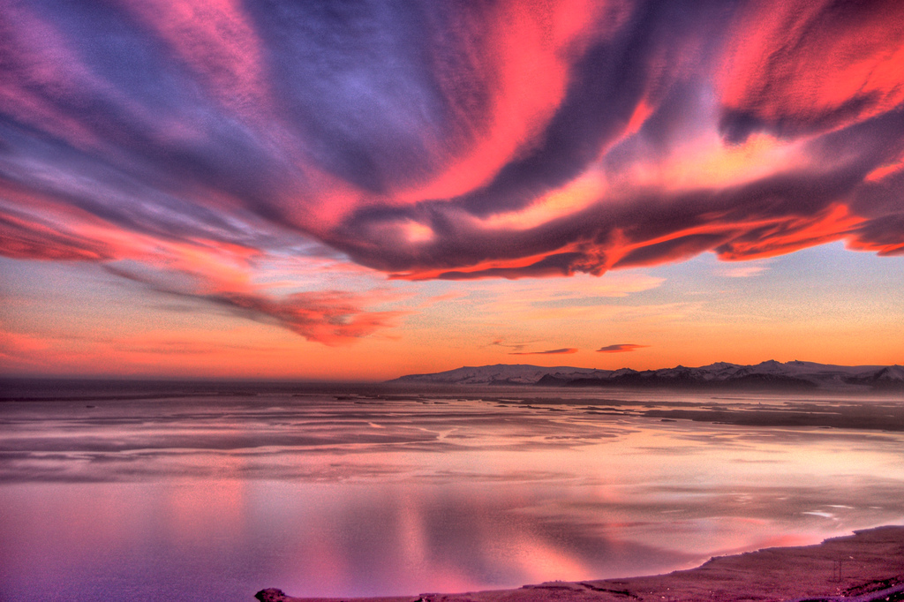
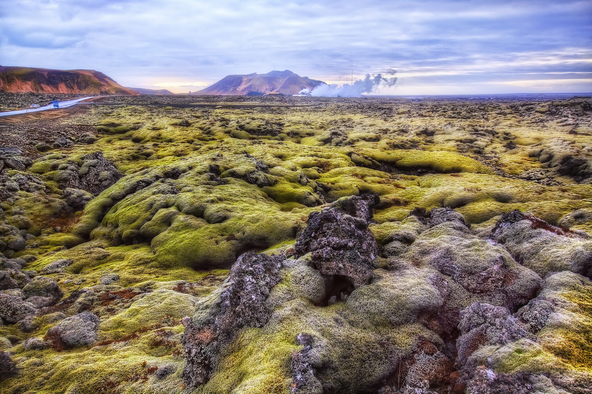

Iceland
The name itself conjures up an image of a land of imposing ice formations, and while that isn’t too far off, Iceland is more than just arctic temps and shining glaciers. Don’t let the cold deter you: Iceland might be almost at the top of the world, just below the Arctic Circle, but its winter temperatures are often warmer than those in New York (and it's only a 5-hour plane ride from New York, too). While its dramatic, otherworldly natural wonders, especially the northern lights, are nothing short of magical, there are many more reasons you’ll be enchanted on a visit to Iceland.

Sunset in Iceland

Iceland Scenic Nature

Silfra Snorkeling, Iceland

Aurora Borealis

Sunset-Dusk-Iceland-Sky-Mountains-Falls-Waterfall

Kirkjufell Mountain

The glacier volcano of Eyjafjallajokull
Blue Lagoon
IcelanD Vikings